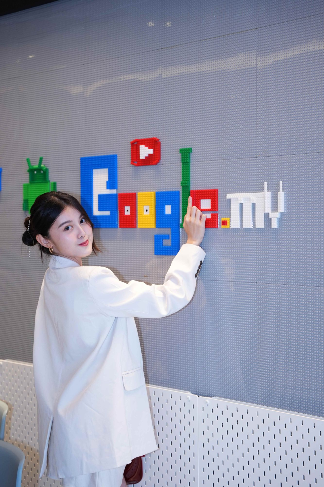
Hi, I’m Sherlyn Heon.
Let’s build it!
I research AI—and make playful things with it. Explore my experiments, then build your own.
Start here
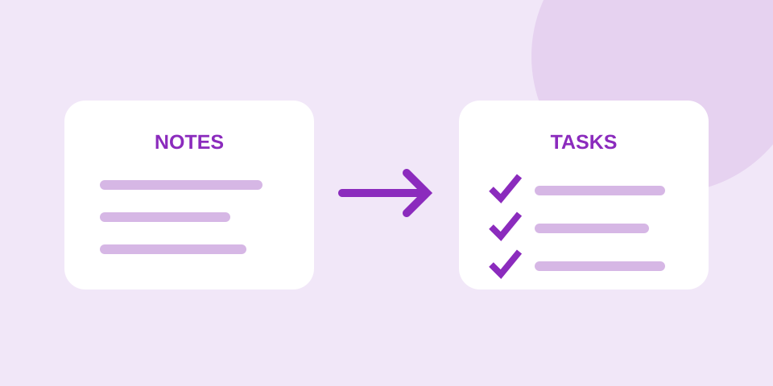
Turn meeting notes into a task tracker
Pull out decisions, owners and deadlines. Flag what nobody agreed to.
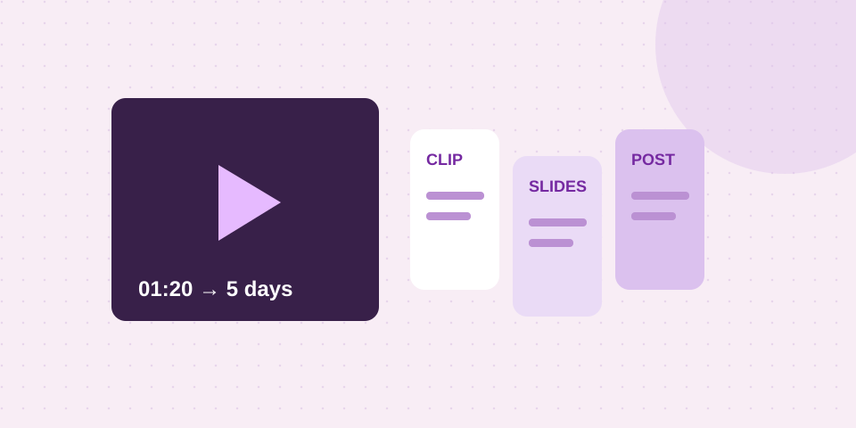
Turn one video into a week of content
Create a grounded content plan with clip timestamps, captions and a carousel.
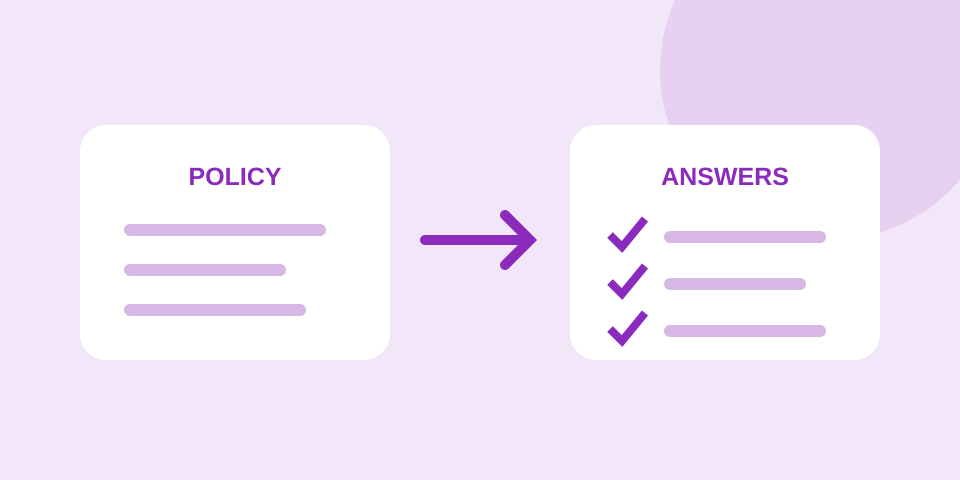
Build a customer FAQ drafting assistant
Answer from a policy file—and say when the answer is missing.
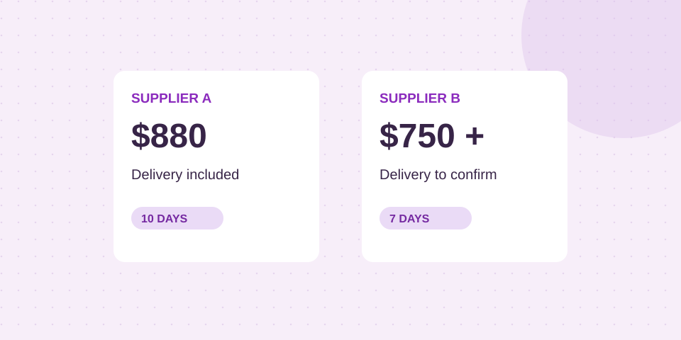
Compare supplier quotes with AI
Put costs, exclusions and delivery terms on the same page.
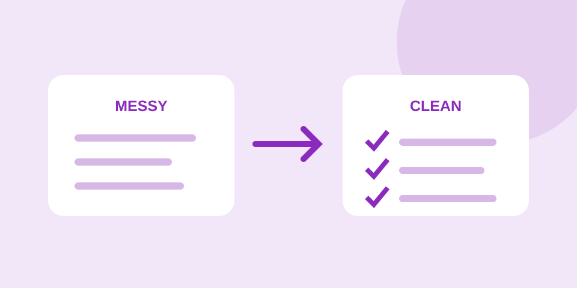
Clean a messy spreadsheet with AI
Standardise safe fields, isolate ambiguous dates and keep a change log.
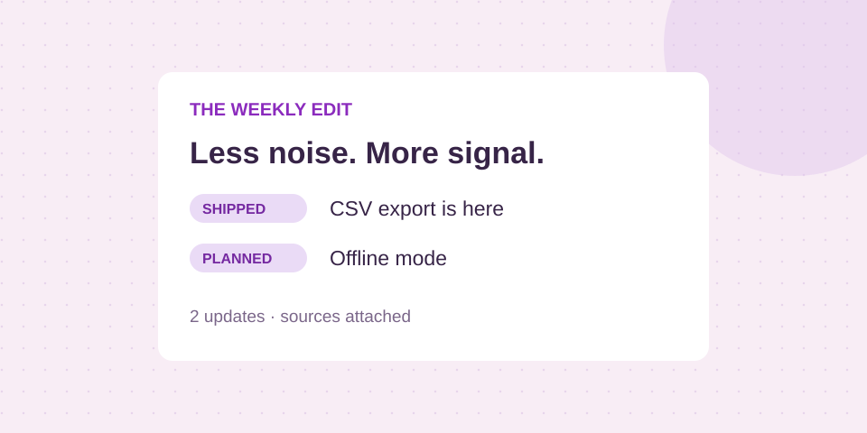
Create a weekly research digest
Turn a small reading list into a dated, source-linked briefing.
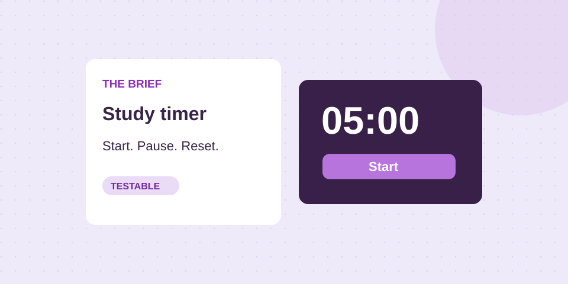
Write an AI project brief you can actually test
Turn an app idea into a build specification and acceptance checklist.
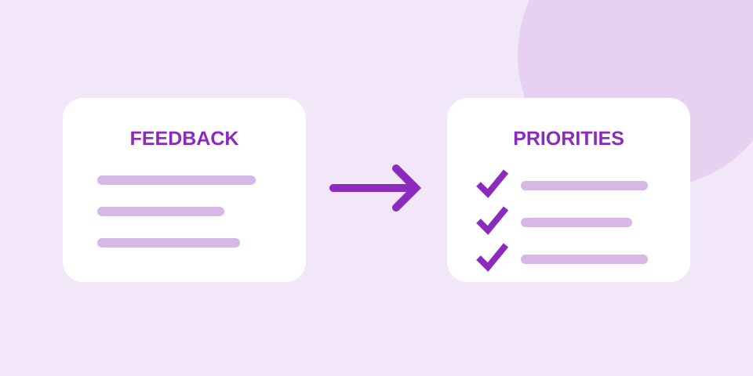
Turn customer feedback into a priority list
Count unique reports, preserve evidence and separate frequency from impact.
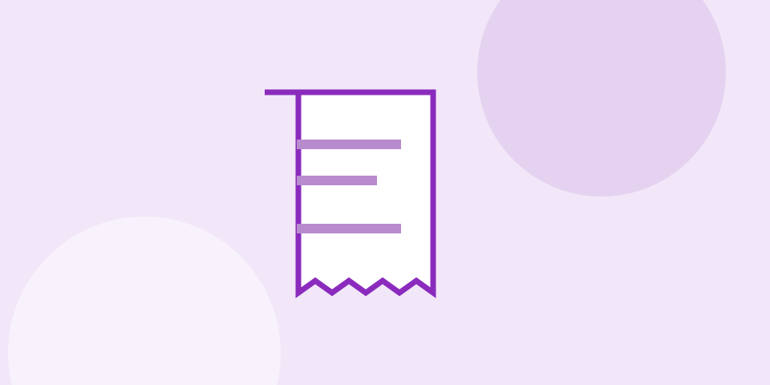
Turn receipts into an expense tracker
Extract receipt details, check the numbers, and save them to Google Sheets.
Build an AI email draft assistant
Turn an incoming email into a Gmail draft you review before sending.
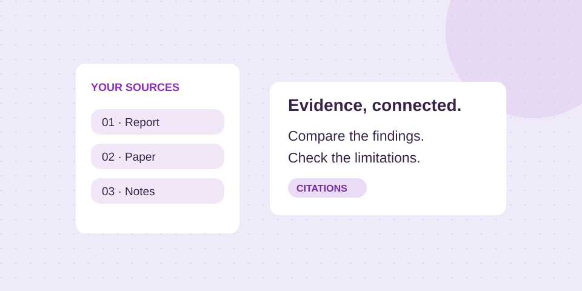
Build a research assistant for your documents
Compare documents, trace claims to sources, and find what is missing.
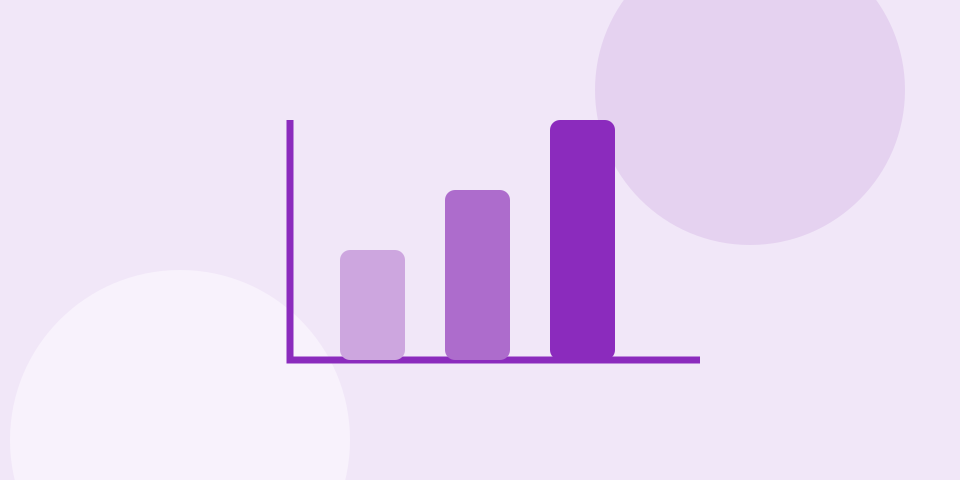
Turn content analytics into a dashboard
Find which posts earn saves and shares—not just views.
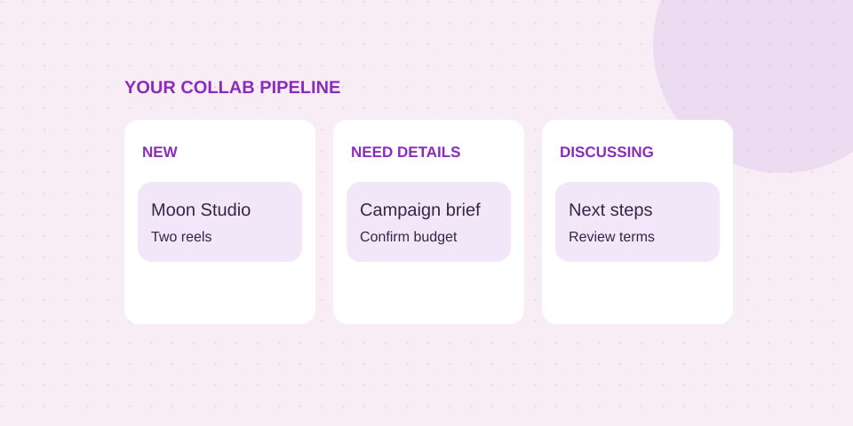
Build a brand-enquiry tracker
Collect enquiries in one place and draft replies without losing the details.
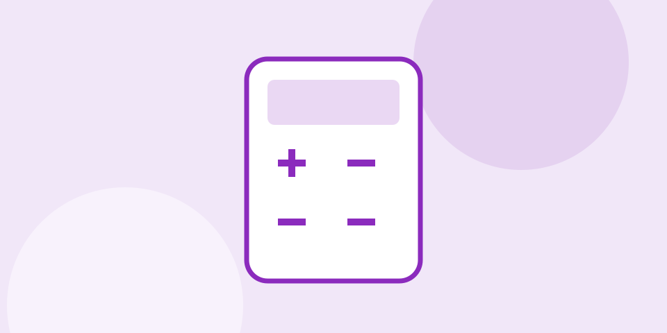
Build an interactive calculator with AI
Create a project estimate calculator with clear maths and a shareable link.
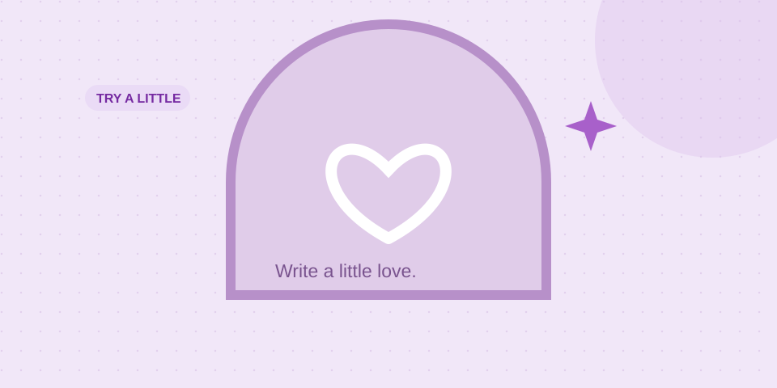
Build a foggy mirror with AI
Fog up your webcam mirror, write with your fingertip, and leave a kiss. Get the full prompt to build your own.
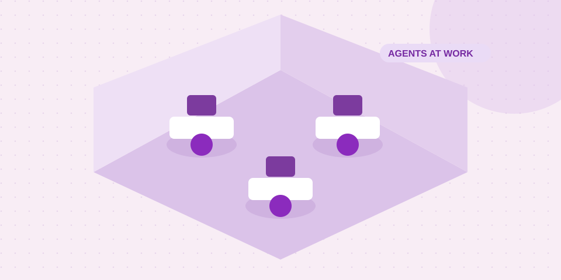
Give your AI agents a 3D office
Give your agents a place to work. Watch their activity and check their tasks.
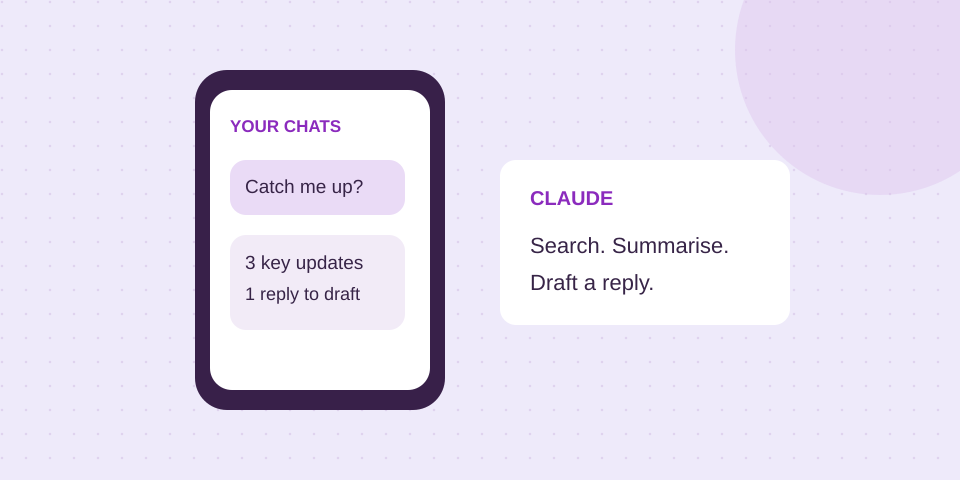
Connect Claude to your WhatsApp
Search your chats, catch up on conversations, and draft replies with Claude.